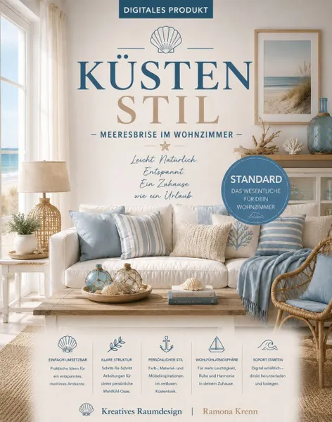

Küstenstil - Standard
Produktprofil · Marktplatz-Daten 2026-10-14 · Verkaufsseiten-Recherche 2026-10-14 · Kategorien: Home & Garden, Hobby & Craft
- Küstenstil - Standard ist ein/e Download in Home & Garden und Hobby & Craft, vertrieben über den Digistore24-Marktplatz von Anbieter ramonakrenn923f, gelistet seit 2026-07-27.
- Listenpreis $18.80 (single payment) — Checkout, Auslieferung und Rückerstattungen laufen über Digistore24 selbst, nicht über den Anbieter.
- Käuferschutz: keine standardisierte Garantie-Formulierung gefunden — Rückerstattungsbedingungen vor der Zahlung auf der offiziellen Seite prüfen.
Interesse an Küstenstil - Standard? Aktueller Preis, Boni und Garantiebedingungen finden Sie auf der offiziellen Seite des Anbieters:
Offizielle Verkaufsseite ansehen
Affiliate-Link (Werbung) — wir verdienen ggf. eine Provision, ohne Mehrkosten für Sie.

Marktplatz-Daten
| Produkttyp | Download |
|---|---|
| Preis | $18.80 (Single payment) |
| Garantie/Rückgabe | Laut Verkaufsseite des Anbieters — vor dem Kauf auf der offiziellen Seite prüfen |
| Anbieter | ramonakrenn923f (gelistet seit 2026-07-27) |
Marktplatz-Beschreibung des Anbieters
Das digitale Inspirationsbuch für ein helles Zuhause mit maritimem Charme und entspannter Urlaubsatmosphäre Hol dir das Gefühl von Sonne, Strand und Meeresrauschen in dein Zuhause. Mit „Küstenstil – Meeresbrise im Wohnzimmer“ erhältst du ein digitales Inspirationsbuch, das dir zeigt, wie du die Leichtigkeit des Lebens am Meer mit zeitloser Wohnkultur und modernem Design kombinierst. Empfehlen Sie ein hochwertiges digitales Wohn- und Einrichtungsprodukt mit hoher Relevanz für die beliebte Home-&-Living-Zielgruppe. Inspirierende Raumideen, stilvolle Moodboards und praktische Anleitungen sorgen für hohe Kundenzufriedenheit – ideal für Pinterest, Blogs, Social Media und E-Mail-Marketing.
Von der Verkaufsseite des Anbieters
Seitentitel: Küstenstil Standard - Digistore24
Hauptüberschrift
Küstenstil – Meeresbrise im Wohnzimmer als Standard Ausgabe mit 52 Seiten
Küstenstil – Meeresbrise im Wohnzimmer als Standard Ausgabe mit 52 Seiten
Küstenstil – Meeresbrise im Wohnzimmer als Standard Ausgabe mit 52 Seiten
Abschnitts-Überschriften
- Das digitale Inspirationsbuch für ein helles Zuhause mit maritimem Charme und entspannter Urlaubsatmosphäre
- Das erwartet dich
- Für wen ist dieses Inspirationsbuch geeignet?
- Deine Vorteile
- Warum dieses Inspirationsbuch?
- Das digitale Inspirationsbuch für ein helles Zuhause mit maritimem Charme und entspannter Urlaubsatmosphäre
- Das erwartet dich
- Für wen ist dieses Inspirationsbuch geeignet?
- Deine Vorteile
- Warum dieses Inspirationsbuch?
Einstiegstext
Hol dir das Gefühl von Sonne, Strand und Meeresrauschen in dein Zuhause. Mit „Küstenstil – Meeresbrise im Wohnzimmer“ erhältst du ein digitales Inspirationsbuch, das dir zeigt, wie du die Leichtigkeit des Lebens am Meer mit zeitloser Wohnkultur und modernem Design kombinierst.
Der Küstenstil verbindet helle Farben, natürliche Materialien und luftige Wohnkonzepte zu einer Atmosphäre voller Ruhe, Frische und Gelassenheit. Inspiriert von den Küsten Skandinaviens, der Nordsee, dem Mittelmeer und den Hamptons entsteht ein Wohnstil, der das ganze Jahr über Urlaubsgefühl vermittelt. Dieses E-Book begleitet dich Schritt für Schritt bei der Gestaltung deiner persönlichen Wohlfühloase.
✔ Harmonische Farbkonzepte mit Weiß, Sand, Beige, Hellgrau sowie verschiedenen Blau- und Türkistönen
✔ Inspirationen für Wohnzimmer, Küche, Esszimmer, Schlafzimmer, Badezimmer, Eingangsbereich und Balkon oder Terrasse
Preisangaben auf der Seite: $10
Recherche-Methode: rohes HTML · 2848 Wörter · Qualität: rich · recherchiert am 2026-10-14. Vollständige Recherche-Datei (MD) ↗
Wie Produkte dieser Art geliefert werden
Allgemeiner Hinweis zu diesem Produkttyp (keine anbieterspezifische Anleitung): Download-Produkte werden digital geliefert: sofort nach dem Checkout erhalten Sie Downloadlinks (oder Zugang zu einem Mitgliederbereich) — kein physischer Versand. Für die genaue Anwendung von Küstenstil - Standard sind die offizielle Verkaufsseite und die enthaltenen Materialien maßgeblich.
Gut zu wissen
- Keine Garantie-Formulierung in unserer Recherche gefunden — bestätigen Sie das Rückgabefenster auf der offiziellen Seite, bevor Sie kaufen.
Was ist Küstenstil - Standard?
Küstenstil - Standard ist ein/e download in der Kategorie Haus & Garten des Digistore24-Marktplatzes, veröffentlicht von Anbieter ramonakrenn923f und im Verkauf seit 2026-07-27. Der Anbieter beschreibt es so: "Das digitale Inspirationsbuch für ein helles Zuhause mit maritimem Charme und entspannter Urlaubsatmosphäre Hol dir das Gefühl von Sonne, Strand und Meeresrauschen in dein Zuhause. Mit „Küstenstil – Meeresbrise im Wohnzimmer“ erhältst du ein digitales Inspirat" (Marktplatz-Beschreibung des Anbieters, leicht gekürzt).
Küstenstil - Standard Preis: was Sie zahlen
Der Marktplatz listet Küstenstil - Standard zum $18.80 Preis (single payment). Digistore24 fügt im Checkout die gesetzliche Steuer Ihres Landes hinzu — dort sehen Sie den Endbetrag vor der Zahlung. Die Verkaufsseite selbst nennt: $10 (Anbieteraussagen — verbindlich ist der Checkout-Betrag). Eine separate Plattformgebühr gibt es nicht; Anbieter können eigene Upsells nach dem Checkout anbieten.
Küstenstil - Standard Rückerstattung und Geld-zurück-Garantie
Wir haben keine standardisierte Garantie-Formulierung auf der Verkaufsseite gefunden. Rückerstattungen für Digistore24-Käufe laufen über die Plattform: Antrag über den Support-Link in Ihrer Bestell-E-Mail, innerhalb des Garantiezeitfensters, das im Checkout angezeigt wird. Praktischer Rat: Entscheiden Sie innerhalb des Fensters — wenn das Produkt unter den Erwartungen bleibt, erstatten lassen statt irren lassen.
Mechanik im Detail: So funktionieren Digistore24-Rückerstattungen.
Für wen ist Küstenstil - Standard geeignet?
Basierend auf der Haus & Garten-Einordnung und der single payment-Abrechnung richtet sich Küstenstil - Standard an Käufer, die haus & garten-Lösungen suchen zum Einstiegspreis. Der ehrliche Test ist nicht die Kategorie, sondern Ihre eigene Situation: Werden Sie es realistisch innerhalb des Garantiefensters nutzen? Wenn ja, ist der Preis eine Investition; wenn nein, ist er Ballast — unabhängig von der Qualität.
Ist Küstenstil - Standard seriös? Was Sie vor dem Kauf prüfen
Wir bewerten keine Seriosität — das kann niemand, ohne das Produkt zu nutzen. Prüfbare Punkte, alle auf dieser Seite: die Marktplatz-Historie des Anbieters (im Verkauf seit 2026-07-27), die wörtlichen Verkaufsseiten-Auszüge unten (gekennzeichnet als Anbieteraussagen — deren Werbung, nicht unsere Empfehlung), die Garantiebedingungen im Checkout und die Auslieferungsart. Vorsichtsignale bei jedem Angebot: Countdown-Dringlichkeit gepaart mit vagen Rückerstattungsbedingungen, Testimonials ohne Datum und Anbieterseiten, die den Preis bis zum Checkout verstecken.
Wie kommen Sie nach dem Kauf an Küstenstil - Standard?
Der Checkout läuft über Digistore24. Nach der Zahlung: Download-Produkte werden digital geliefert: sofort nach dem Checkout erhalten Sie Downloadlinks (oder Zugang zu einem Mitgliederbereich) — kein physischer Versand. Bewahren Sie die Bestell-E-Mail auf — sie ist Ihr Schlüssel zum/d zur download, zu Rückerstattungsanträgen und zum Digistore24-Käufersupport.
Küstenstil - Standard Erfahrungen: so recherchieren Sie richtig
Die meisten „Erfahrungsberichte" zu Marktplatz-Produkten sind Affiliate-Inhalte — einschließlich Seiten wie dieser, die an Käufen mitverdienen. Behandeln Sie jeden Bericht (auch unseren) als Ausgangspunkt und prüfen Sie gegen Primärquellen: die Verkaufsseite des Anbieters, die Digistore24-Rückerstattungsrichtlinie und — für haus & garten — unabhängige Communities außerhalb des Affiliate-Ökosystems. Auf dieser Seite sind die Verkaufsseiten-Auszüge unten wörtlich zitiert, damit Sie die Aussagen des Anbieters bewerten können, ohne wegzuklicken.
Wie Sie Küstenstil - Standard sicher kaufen
- Öffnen Sie die offizielle Verkaufsseite und lesen Sie das vollständige Angebot.
- Bestätigen Sie Endpreis und Garantiezeitfenster auf der Digistore24-Kassenseite — sie ist bindend, kein Vergleichsportal.
- Zahlen Sie innerhalb des Digistore24-Checkouts (niemals per Überweisung oder Off-Platform-Links).
- Speichern Sie die Bestellbestätigung; notieren Sie die Rückerstattungsfrist im Kalender.
- Prüfen Sie zügig. Der Digistore24-Käufersupport hilft, wenn der Anbieter nicht reagiert.
Vollständiges Recherche-Archiv für dieses Produkt (Markdown: kompletter Marktplatz-Datensatz + wörtliche Verkaufsseiten-Auszüge): Küstenstil - Standard — Datenarchiv (.md).
- Listenpreis & Abrechnung — Quelle: offizielle Digistore24-Marktplatz-API, Stand 2026-10-14. Maßgeblich für den aktuellen Preis ist immer die Kassenseite.
- Verkaufsseiten-Zitate — Quelle: https://www.checkout-ds24.com/product/714244, abgerufen 2026-10-14 (Methode: rohes HTML). Verify: offizielle Seite öffnen.
- Garantie / Rückgabe — vom Anbieter festgelegt; vor dem Kauf auf der Verkaufsseite bestätigen.
- Nicht von uns geprüft: Produktqualität, Ergebnisse, Testimonials — kein Praxistest für dieses Listing durchgeführt.
Häufige Fragen zu Küstenstil - Standard
Antworten aus dem Marktplatz-Snapshot (2026-10-14) und der Verkaufsseiten-Recherche (2026-10-14); Anbieteraussagen sind inline gekennzeichnet.
Was ist Küstenstil - Standard?
Küstenstil - Standard ist ein Angebot des Typs „Download" im Digistore24-Marktplatz, Anbieter: ramonakrenn923f, gelistet seit 2026-07-27. Eingepflegt unter Haus & Garten und Hobby & Handwerk. Digistore24 wickelt Checkout, Lieferung und Rückgaben ab.
Wie viel kostet Küstenstil - Standard?
Der Digistore24-Marktplatz listet es für $18.80 (single payment). Preise legt der Anbieter fest und können sich ändern — der Marktplatz-Eintrag oben zeigt den Schnappschuss; die offizielle Verkaufsseite zeigt den aktuellen Preis.
Gibt es eine Geld-zurück-Garantie für Küstenstil - Standard?
Unsere Verkaufsseiten-Recherche hat keine explizite Garantie-Formulierung gefunden. Viele Digistore24-Produkte bieten 60 Tage Geld-zurück, aber das legt jeder Anbieter selbst fest — bestätigen Sie es auf der offiziellen Verkaufsseite, bevor Sie kaufen.
Ist Küstenstil - Standard seriös?
Wir bewerten keine Seriosität — wir veröffentlichen überprüfbare Zahlen: Anbieter ramonakrenn923f (gelistet seit 2026-07-27), mit der vollständigen Verkaufsseiten-Recherche archiviert auf dieser Seite (Anbieteraussagen als solche gekennzeichnet). Lesen Sie unsere 6-Punkte-Bewertungsmethode und entscheiden Sie anhand der Zahlen — oder diskutieren Sie Küstenstil - Standard auf GitHub.
Wo kann ich Küstenstil - Standard sicher kaufen?
Nur über die offizielle Verkaufsseite, die auf dieser Seite verlinkt ist (Checkout und Rückgaben laufen über Digistore24). Prüfen Sie dort Preis und Garantie vor der Bestellung. Der Link ist ein Affiliate-Link — der Kauf unterstützt diese Website ohne Mehrkosten für Sie.
Wie erhalte ich Küstenstil - Standard nach der Zahlung?
Der Checkout läuft über Digistore24: Nach der Zahlung erhalten Sie Ihren Zugang oder Download per E-Mail und in Ihrem Digistore24-Kundenkonto. Lieferdetails für diesen Produkttyp: Download-Produkte werden digital geliefert: sofort nach dem Checkout erhalten Sie Downloadlinks (oder Zugang zu einem Mitgliederbereich) — kein physischer Versand. Bei Problemen kann der Digistore24-Käufersupport Ihre Bestellung wiederherstellen.
Alle 50 Käuferfragen zu Haus & Garten — das komplette Kategorie-FAQ.
Küstenstil - Standard auf Reddit diskutieren
In Community-Threads vergleichen echte Käufer Erfahrungen. Wir verlinken Communities, keine einzelnen Posts — Threads verschwinden, Subreddits bleiben:
- Reddit-Suche nach „Küstenstil - Standard" — Live-Ergebnisse, von uns nicht beeinflusst.
- Top-„Erfahrungs"-Treffer dieses Jahr — selbst nach Aktualität filtern.
Passendes auf Amazon.de
Physische Produkte und Zubehör, die häufig zusammen mit Küstenstil - Standard gekauft werden:
- Gartenwerkzeug auf Amazon.de — Top-Ergebnisse, Amazon-Ranking.
- Bestseller: Gartenwerkzeug — live Liste von Amazon, von uns nicht kuratiert.
Werbung: Als Amazon-Partner verdient DigistorePicks DE an qualifizierten Käufen (Partner-tag adminstorede-21). Amazon setzt eigene Preise und Provisionen (niedrige einstellige Prozente — weit unter den 30–75% der Digistore24-Anbieter). Amazon ist ein Convenience-Angebot für Sachprodukte, kein Ersatz für das digitale Produkt oben.
Ähnliche Angebote in Haus & Garten

Ideales Partnerprogramm für JEDEN aus der Immobilienbranche. Erhalte 20% Provision beim Verkauf von Home Staging Online Kursen. Die Staging Akademie ist Deutsch
Verdien 190 Euro netto pro Sale in der unentdecktesten Nische des Jahres! Bist du genervt von den ewig gleichen Geld-verdienen-Produkten wie Dropshipping, Krypt

MIETfrei – löst großes gesellschaftliches Problem vieler Menschen in Deutschland Wohnraum finden trotz extrem angespanntem Wohnungsmarkt für einen günstigen Pre

Feng Shui Online-Kurs Entspannt wohnen – entspannt sein Feng Shui, das Jahrtausende erprobte Wissen kann – richtig angewendet – vielleicht auch Deine Lebensqual
Weitere Angebote von ramonakrenn923f

Skandinavisches Wohndesign leicht gemacht – Deluxe Mehr Helligkeit, mehr Gemütlichkeit, mehr Wohngefühl – entdecken Sie den skandinavischen Einrichtungsstil für

Bewirb „New York Loft-Stil“ und inspiriere deine Zielgruppe zu einem urbanen Zuhause mit echtem Großstadtflair! Das digitale Produkt zeigt, wie sich markante Ma

Bewirb „Küstenstil neu gedacht – Mit Feng Shui zu mehr Ruhe und Wohlbefinden“ und inspiriere deine Zielgruppe zu einem harmonischen Zuhause mit entspannter Küst

Bewirb „Der Weg zum Traumhaus“ und begleite deine Zielgruppe Schritt für Schritt auf dem Weg ins eigene Zuhause. Der digitale Leitfaden unterstützt bei der Grun
Gleicher Anbieter auf unserer englischen Website
- Scandinavian Interiors made easy Premium — $55.93 (Home & Garden)
- Scandinavian Interiors made easy Personalized Ideas — $22.36 (Home & Garden)
- Coastal Style - Standard — $22.36 (Home & Garden)
Gleicher Anbieter, englischsprachige Marktplatz-Listings.
Küstenstil - Standard ist auch gelistet in
Hobby & Handwerk (181 Produkte)
Ähnliche Preislage in Haus & Garten

Ihre Zielgruppe beschäftigt sich mit Hauskauf, Altbausanierung oder energetischer Modernisierung? Dann empfehlen Sie einen Ratgeber, der bei einer konkreten Ent

Homöopathie Für Pflanzen Unlock natural plant care with Homöopathie Für Pflanzen, a practical e-book guide that helps growers cultivate stronger, healthier plan
Bewirb „Küstenstil neu gedacht – Mit Feng Shui zu mehr Ruhe und Wohlbefinden“ und inspiriere deine Zielgruppe zu einem harmonischen Zuhause mit entspannter Küst
Bewirb „Der Weg zum Traumhaus“ und begleite deine Zielgruppe Schritt für Schritt auf dem Weg ins eigene Zuhause. Der digitale Leitfaden unterstützt bei der Grun
Ähnliche Suchanfragen
Wo Sie es sich ansehen können
Wo Sie es sich ansehen können
Aktuelle Preise, Garantie und Boni finden Sie auf der offiziellen Verkaufsseite:
Offizielle Verkaufsseite ansehen
Das ist ein Affiliate-Link (Werbung) — kaufen Sie darüber, verdienen wir ggf. eine Provision, ohne Mehrkosten für Sie.
Quellen & weiterführende Informationen
- Offizielle Verkaufsseite (aktueller Preis, Garantie, Boni): www.checkout-ds24.com/product/714244 (Affiliate-Link)
- Öffentliche Digistore24-Produktseite: checkout-ds24.com/product/714244
- Vollständige Recherche-Datei (Markdown, versioniert): content/products/57764-k-stenstil-standard.md
- Marktplatz-Kategorie: Haus & Garten
Wie wir Produkte wie Küstenstil - Standard bewerten
Sechs Prüfungen, ausschließlich mit offiziellen Marktplatz-Zahlen. Die vollständige Bewertungsmethode lesen · unsere Recherche-Standards & Kennzeichnung.
Fragen oder eigene Erfahrungen mit Küstenstil - Standard?
Praxis-Tests veröffentlichen wir erst, nachdem wir ein Produkt selbst gekauft haben — aber Ihre Erfahrung hilft anderen Lesern: Diskussion zu Küstenstil - Standard auf GitHub starten/verfolgen. Falsche Zahl gefunden? Korrektur melden — jede Seite zeigt ihre Datenstände, Korrekturen gelten für die ganze Website.